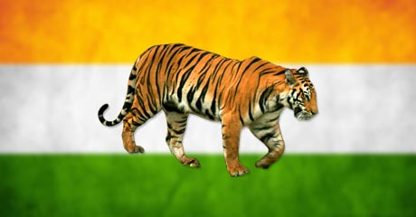

National Animal
- Common Name : Royal Bengal Tiger
- Scientific Name : Panthera tigris tigris
- Adopted in : 1972
- Found in : India, Nepal, Bangladesh, Myanmar, Sri Lanka
- Habitat : Grasslands, forests, mangrove vegetation
- Eating Habits : Carnivorous
- Average Weight : Male – 220 Kg; Female – 140 Kg
- Average Length : Male – upto 3 m; Female -upto 2.6 m
- Average Lifespan : 8-10 years in wild
- Average Speed : 60 km/h
- Conservation Status : Endangered (IUCN Red List)
- Current number : 2500 in 2016
A national animal is one of the symbolic representatives of a country’s natural abundance. The choice is based on several criteria. The national animal may be selected based on how well it represents certain characteristics that a country wants to be identified with. It has to have a rich history as part of the country’s heritage and culture. The animal should be in abundance within the country. Mostly a national animal should be indigenous to that particular country and exclusive to the country’s identity. It should be a source of visual beauty. The national animal is also chosen based on the conservation status of the animal to enable better efforts towards its continued survival due to the official status.
National animal of India is the Royal Bengal Tiger. Majestic and lethal at the same time, these are one of the most graceful carnivores among the Indian fauna. The Royal Bengal tiger is the symbol of strength, agility and grace, a combination that is unmatched by any other animal. It is representative of all these qualities as the national animal of India. Scientific name for the Royal Bengal Tiger is Panthera tigris tigris and it is the largest of the four big cats under the genus Panthera (Lion, Tiger, Jaguars and Leopards).The Royal Bengal Tiger is among the eight varieties of tigers found in India.
Scientific Classification
- Kingdom : Animalia
- Phylum : Chordata
- Clade : Synapsida
- Order : Carnivora
- Family : Felidae
- Class : Mammalia
- Genus : Panthera
- Species : Panthera tigris
Distribution
The tiger is found in various parts of the Indian Subcontinent including India, Bangladesh, Nepal, Myanmar and Sri Lanka. In India, it is found in most parts of the country except the north-eastern regions. They are found in the jungles of West Bengal, Madhya Pradesh, Uttarakhand, Andhra Pradesh, Karnataka and Odisha. India now is home to 70% of the world’s tiger population. As of 2016 a total number of 2500 adult or sub-adult tigers of 1.5 years or more are present in the various tiger reserves across India. Bandipur National Park in Karnataka has the highest number of Royal Bengal Tigers at 408 closely followed by Uttarakhand with340 tigers and Madhya Pradesh with 308.
Habitat
The Royal Bengal Tigers occupy several habitats in India and may be found in grasslands and dry scrub land (Ranthambore in Rajasthan), tropical and subtropical rainforests (Corbett in Uttarakhand/Periyar in Kerala), mangroves (Sunderbans), both wet and dry deciduous forests (Kanha in Madhya Pradesh/Simlipal in Odisha).
Physical Traits
Royal Bengal Tigers are one of the most handsome and regal animals found in India. They have a coat of short hair, reddish brown to golden orange in color with vertical black stripes and a white underbelly. The eye color is yellow or amber with black pupils. Royal Bengal Tigers can also have a white coat with brown or black stripes and blue eye color. The white color of the coat is due to a mutation in the gene producing pigment pheomelanin and not due to albinism. The pattern of stripes on the coat is distinctive for each tiger and helps in their identification. Royal Bengal Tigers have muscular bodies with powerful fore limbs. They have large heads with a dense growth of fur around the lower jaw and long white whiskers. They have long canines measuring upto 10 cm and large retractable claws. They have padded paws, excellent vision, keen sense of smell and hearing.
The males grow upto 3 meters in length from nose to tail and weigh somewhere in between 180 to 300 Kg. The females of the species may weigh between 100-160 Kg and attain a length of upto 2.6 m. The largest Royal Bengal Tiger till date has weighed around 390 Kg.
Behavior
By nature Royal Bengal tigers are solitary and generally do not form packs. They are territorial and the size of their territories depends on the abundance of prey. They generally mark their territories with urine, anal gland secretions and claw marks. The females of the species are generally accompanied by her cubs until they attain adulthood. Royal Bengal Tigers are nocturnal animals. They laze around during the day and hunt during the night. They are excellent swimmers and climb trees with much ease despite their large bodies.
Royal Bengal Tigers are carnivores and they prey mainly on medium sized herbivores such as chital deer, sambars, nilgais, buffalos and gaurs. They also prey on smaller animals such as rabbits or monkeys. They have also been reported to prey on young elephant and rhino calves. These tigers use stealth to track their prey, wait till they are close to them and they pounce while aiming to overpower either by severing the spinal cord or by biting the jugular vein in the throat of the prey. The Royal Bengal tigers can eat upto 30 Kg of meat at a time and can survive for three weeks without food.
Life Cycle
Male tigers reach maturity 4-5 years after birth while females attain maturity by 3-4 years of age. There is no fixed season for mating. The gestation period is 95-112 days and the size of the litter may be anywhere between 1-5 cubs. Young male leave the mother’s territory while the female tigers establish territory close to hers.
 +91 9917078188
+91 9917078188 mohitpratap51@gmail.com
mohitpratap51@gmail.com www.IndianCulture.com
www.IndianCulture.com